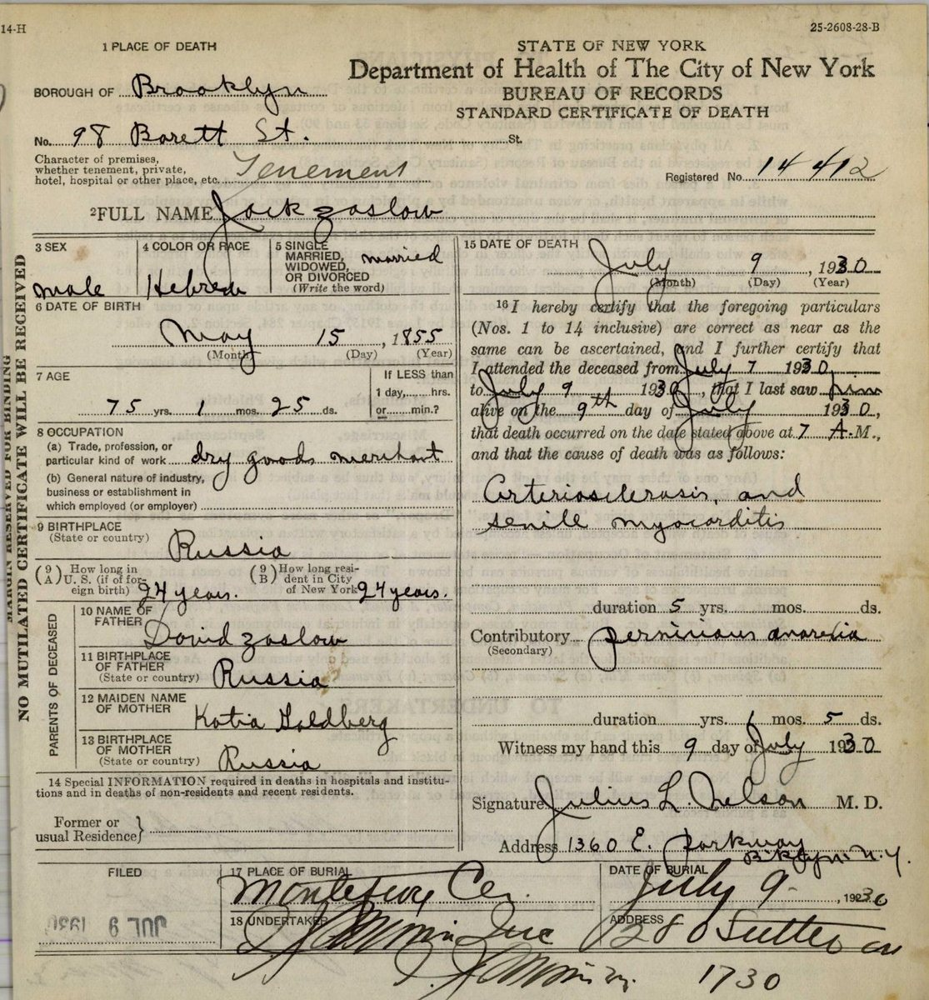

The Zaslows of Obodovka
Benjamin Zaslow, born at Obodovka, and his parents and brothers in Brooklyn.
In this chapter
Benjamin Zaslow’s own account
Benjamin Zaslow, Doris’s father, was born on 8 January 1885 at “Obodofsky,” Russia, by his own account in his naturalization papers. This was Obodovka (Obodivka), a small Jewish market town in Olgopol district, Podolia. In 1921 he swore that he had come from Liverpool on a ship he called the Rappaport, landing at Philadelphia on or about 15 March 1904, and in 1923 that he had left England about 6 March. No ship of that name sailed to Philadelphia; it may have been the name of a ticket agent.1
The Haverford, March 1904
Only one ship from Liverpool reached Philadelphia that week: the American Line’s Haverford, which sailed on 2 March and docked on 14 March 1904. Its passenger list has no one named Zaslow, but it does have three brothers named Saslawer: Itzik, 29, married, a painter; Berl, 22, single, a painter; and David, 19, single, a tailor. Their last residence was London, where they had spent three months; before that, a place that probably reads Obodiwka. They had paid their own passage and were going to a friend, S. Weisberg, at 391 Amsterdam Avenue in New York.2
The brothers’ family has probably been found in Brooklyn. On 6 August 1906 Jankel and Marjem Soslawer, 54 and 52, with Ruchle, 17, landed at Ellis Island from Liverpool on the Umbria, from “Podol.” Their passage had been paid by their son, and they were going to him, care of H. Lesnoff, at 207 Hopkins Street, Brooklyn. In the 1910 census the same couple, now Jacob and Mary Zaslawer, were living on Chester Street, Brooklyn, with two sons who had come in 1904: Benjamin, 26, single, a pants-factory operator, and Hyman, 24.3
The case that Benjamin Zaslow was “Berl Saslawer” (probable, about 80–85%)
- For: His gravestone gives his Hebrew name as Dov Ber, the name behind the Yiddish Berl.
- For: His death certificate names his parents as Jacob and Miriam, the names of the Brooklyn couple.
- For: The Brooklyn household had a son Benjamin, born about 1884, single, who came in 1904. Benjamin Zaslow married in Philadelphia in 1910, after the census, and the Philadelphia directories of 1899–1910 have no Benjamin Zaslow before then.
- For: Obodovka links them: Benjamin’s brother Herman (Hyman) gave his birthplace as “Obodonka” on his 1942 draft card, and the brothers’ 1904 list probably reads Obodiwka.
- For: The Haverford is the only Liverpool ship that fits Benjamin’s sworn date.
- Against: Berl’s age, 22, implies a birth about 1882, not 1885; the brothers were bound for New York, not Philadelphia; Benjamin remembered 6 March, not 2 March; and no single document yet joins the Brooklyn Benjamin to the Philadelphia one.
- Against: His gravestone names his father as Yochanan, not Yaakov (Jacob); a possible explanation is given below. The 1910 marriage licence, which names the groom’s parents, should settle the question.
Jacob and Miriam in Brooklyn
Benjamin’s father, Jacob Zaslow, known in America as Jack, was born on 15 May 1855 and died on 9 July 1930 at 98 Barrett Street, Brooklyn, a dry goods merchant who had been in the United States 24 years, which fits his 1906 arrival. His death certificate takes the family back another generation: his parents were David Zaslow and Katia Goldberg.4


Benjamin’s mother, Miriam (Marjem, Mary) née Lesnoff, daughter of Herman and Rose Lesnoff, died in Brooklyn on 14 September 1931 after a fall. Jack and Miriam are buried side by side at Montefiore Cemetery, in graves 25 and 26 of the plot of the Adath Israel society of Brownsville and East New York. The “H. Lesnoff” the parents went to in 1906 was probably Harry Lesnoff, a painter who came in 1904 and lived near them in 1910, perhaps Miriam’s brother or nephew.5
Of the brothers, Itzik became Ike Zaslow, a presser of cloaks in Brooklyn; his death certificate in 1940 names his parents as Jacob Zaslow and Miriam Lesnov, and he is buried at Montefiore in the plot of the Bershider society, from Bershad, about 20 km from Obodovka, which he had helped to found in 1922. Herman (Hyman), born on 15 September 1886, died in New York in 1958. David Saslawer has not been identified.6
Obodovka’s own surviving Jewish records have now been read: the births of 1845, 1851 and 1852, the marriages and the community’s voter list of 1918, the farming applications of 1927–28, and the town’s list in the census of 1875. None has a Zaslav or a Lesnoff. So in 1875 Jacob, then about 20, and his father David were not registered in Obodovka. They may have lived there while registered elsewhere, as Benjamin Saslow’s family was in Tulchin, or have come after 1875; Itzik was born in 1876 and Benjamin in 1885, both, by their own accounts, in Obodovka.7
Jack or Yochanan? Benjamin’s gravestone in Philadelphia calls him “Dov Ber son of R. Yochanan.” His father was Jankel on the 1906 list, which can only be Yaakov (Jacob), but in America he was known as Jack, which is also the familiar form of John, in Hebrew Yochanan. Benjamin died in 1940, when Doris was thirteen; whoever ordered his stone may have turned “Jack” back into Hebrew as Yochanan. This is an inference.
Benjamin and Catherine in Philadelphia
In 1910 Benjamin married Catherine (Katie) Saslow, then a hosiery worker of about 19, living with her parents on South Fifth Street. The Philadelphia licence, number 260214, was issued to “Beny Zaslof” and “Katie Saslow”; Katie was still single on census day, 15 April 1910, so they married later that year.8 Benjamin became a grocer, and by 1921 the family lived at 2163 East Cambria Street, where he kept a fruit store. He was naturalized on 10 March 1924; the witness to his petition was “B. Saslow,” paperhanger, of 2208 South Fifth Street: his father-in-law.1
They had four children: Sylvia, born on 22 December 1911; Edward, born on 30 December 1918; Mildred, born in December 1923, who died aged two months on 16 February 1924 at her grandparents’ house on South Fifth Street; and Doris, born on 24 May 1926.9
Catherine died on 5 September 1937, aged 46, and was buried at Har Jehuda beside her father; her Hebrew name on her stone is Beila daughter of Dov. Benjamin died of lung cancer at the Jewish Hospital on 29 February 1940 and was buried at Har Jehuda on 3 March. His stone, in Hebrew, reads Dov Ber son of R. Yochanan, died 20 Adar I 5700. Doris was eleven when her mother died and thirteen when her father died.10
Notes
-
Declaration of intention no. 67614, 9 November 1921, and petition no. 62333, 19 November 1923, with oath and certificate no. 1953580, 10 March 1924, US District Court, Eastern District of Pennsylvania (RZ-S22, RZ-S23); US census, 1930 (RZ-S24). ↩↩
-
Philadelphia passenger list, SS Haverford from Liverpool, arrived 14 March 1904, image 0340, lines 20–22, NARA T840 roll 45 (RZ-S71); UK outward list, Liverpool, 2 March 1904 (RZ-S78). Readings re-checked against the full-resolution image. ↩
-
Ellis Island passenger list, SS Umbria, arrived 6 August 1906, lines 1–3, NARA T715 roll 750 (RZ-S77); US census, 1910, Brooklyn Ward 26, ED 801, sheet 19B (RZ-S76); Philadelphia directories, 1899–1910; WWII draft registration, Herman Zaslow, 1942 (RZ-S81); gravestone of Benjamin Zaslow (RZ-S50); Pennsylvania certificate of death no. 13632 (RZ-S45). ↩
-
Certificate of death no. 14412, Jack Zaslow, Brooklyn, 9 July 1930, NYC Municipal Archives D-K-1930-0014412 (RZ-S82), a860-historicalvitalrecords.nyc.gov/view/6177455; Montefiore Cemetery burial search; US census, 1920. ↩
-
Certificate of death no. 19516, Miriam Zaslow, Brooklyn, 1931, a860-historicalvitalrecords.nyc.gov/view/6105933 (RZ-S80); US census, 1910 (Harry Lesnoff). ↩
-
Certificate of death no. 8348, Ike Zaslow, Brooklyn, 1940, a860-historicalvitalrecords.nyc.gov/view/6883613 (RZ-S79); Brooklyn Daily Eagle, 1922 (Bershider Benevolent Society); WWII draft registration, Herman Zaslow (RZ-S81). ↩
-
Obodovka Jewish registers, 1845, 1851, 1852 and 1918, State Archives of Khmelnytskyi Region, fond 227 (RZ-S97); Obodovka community election lists, 1918, and farming applications, 1927–28, Central State Archive of Supreme Bodies of Ukraine, fonds 1854 and 505 (RZ-S98); Jewish census of Podolia, 1875, Olgopol district, 226-80-1182, pp. 912–1059 (RZ-S102). All free scans on Wikimedia Commons. ↩
-
Philadelphia marriage licence index, no. 260214, 1910 (RZ-S52); US census, 1910, Philadelphia Ward 39 (RZ-S28); US census, 1930, “age at first marriage 26” (RZ-S24). ↩
-
Petition for naturalization, 1923 (RZ-S23); US census, 1930 (RZ-S24); Pennsylvania certificate of death, Mildred Zaslow, 1924 (RZ-S47); Social Security Applications and Claims Index, Doris Zaslow (RZ-S08.15, RZ-S10). AncientFaces gives her birth year as 1927; the Social Security record and the 1930 census (age 3) support 1926. ↩
-
Pennsylvania certificate of death no. 13632, Benjamin Zaslow, 1940 (RZ-S45); Find a Grave memorials 179556327 and 205024807, with gravestone photographs (RZ-S48, RZ-S50, RZ-S57). ↩